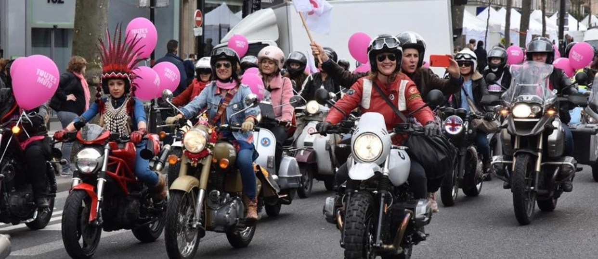
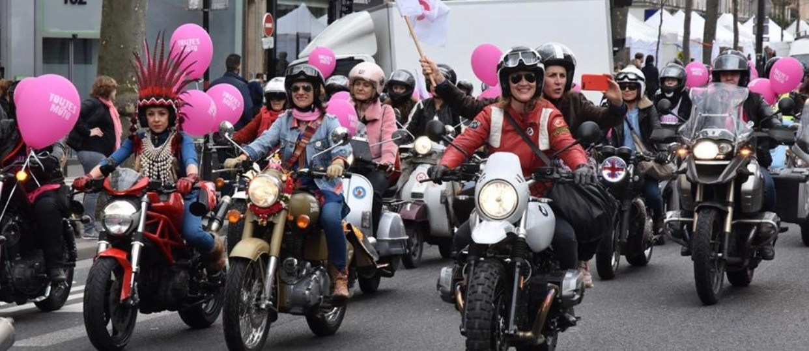
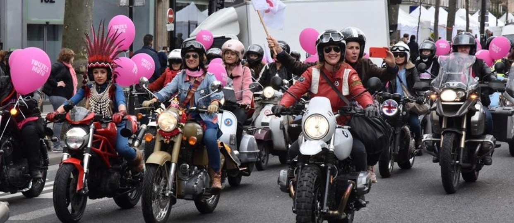

Documentary
___ Women
A documentary about women who ride motorcycle in France by Celestine Coutouis.
Pt.1
Pt.3
Pt.4
Pt.5
Pt.6
 

+ Motorcycle
A documentary about women who ride motorcycle in France by Celestine Coutouis.
What follows is the script of the documentary. Since the project isn’t done yet, all content you see might change.
Pt.1
Riding ASTRIDE was considered until the end of 19th century as incorrect for women because it can be seen as a metaphor of sexual contact. Sequence shot_woman riding her motorcycle.
Pt.2
On the image we don’t see their face, we only see details when they prepare their bike and themself before a ride.
Voice over: They talk about what they love about riding motorcycle; their feeling of liberty, emancipation, power etc.
Pt.3
Auto/motor show_ How women are showed in those events.
Text of MONA CHOLLET from her book « beauté fatale »
Text of VIRGINIE DESPENTES : « King kong theorie »
As we see in the images, girls can sit on motocycle but as their outfit are not pratical, they can’t ride it.
Pt.4
Interview_man and woman rider talking about women in motor groups.
The main idea here is to show different profile of women riders because there are a lot of cliches about riders and there are a lot of different women who ride not only old women with blond hair.
The second point is to talk about the political act of riding a bike as a woman.
Pt.5
The group, characteristic of rider club
Voice over : definition of wolf gang with notion of taking care of the pack/group
Pt.6
Voice over : interview of member of the association « toutes en moto »
They talk about why they decided to join the association. Why it is important for them to be a part of it.
Toutes en moto is an association that promotes motorcycle for women. And they are also engaged with a lot of other associations for women like; writers, against marital violences, ect.
